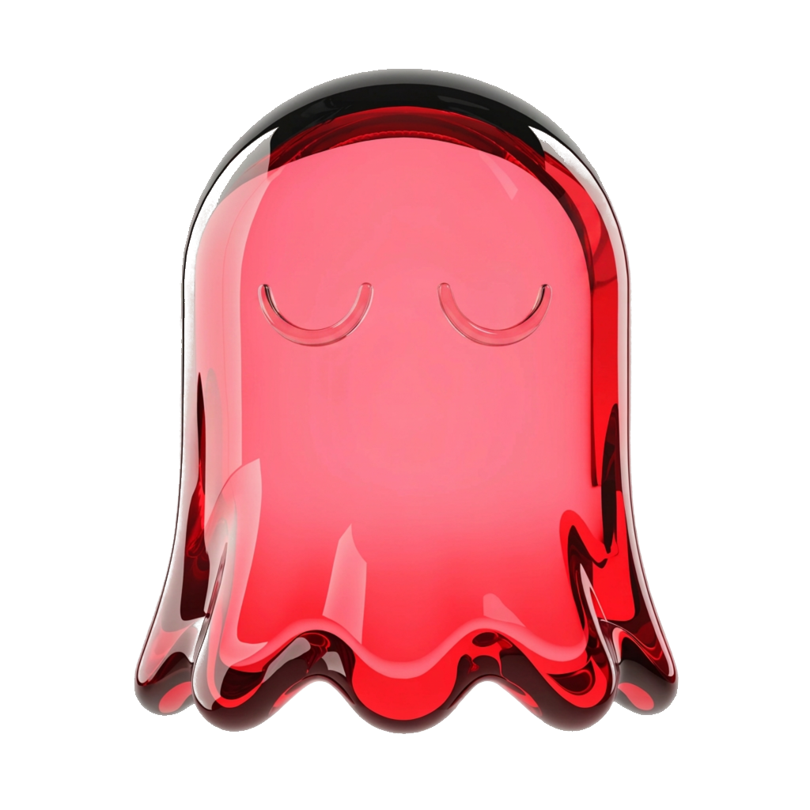
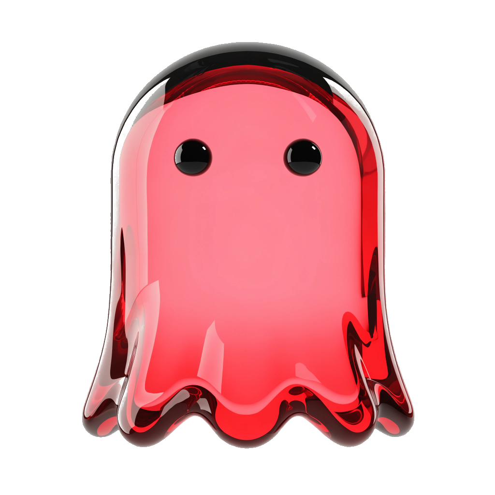

마스코트_누끼·마스코트_렌더·마스코트_정본 자산을 삭제했고, 그래서 아래 그림이 깨져 보입니다. 글과 수치는 그대로 유효한 판정 기록입니다 — 그림만 없습니다. 되살리려면 git log --all -- docs/캐릭터/마스코트_정본 에서 꺼냅니다.유호님 확정: B안(체리 = 마스코트 고유색) · 남은 질문 = 앱 시스템 UI를 코랄로 둘지 체리로 바꿀지. 아래는 그 자리에서만 갈리는 것을 직접 계산하고 실제 화면에 얹어 본 결과입니다.
마스코트는 양쪽 다 체리입니다. 다른 것은 버튼·알약·진행바 같은 시스템 색뿐이에요. 같은 화면을 두 벌 만들어 나란히 두면, 말로 설명할 필요 없이 한 가지가 눈에 들어옵니다.
어제보다 두 문제 더 맞혔어요

마스코트가 화면에서 떠오릅니다. 바탕(33.9)·말풍선(27.3)·카드(32.7) 어디에 놓아도 체리가 코랄 계열과 안 겹쳐서, 캐릭터가 UI 위에 얹혀 있는 별개의 존재로 읽힙니다.
어제보다 두 문제 더 맞혔어요
버튼이 마스코트와 같은 색이 됩니다. 캐릭터가 「우리 화면에 사는 친구」가 아니라 버튼과 같은 재질의 UI 부품처럼 보여요. 그리고 아래 3번에서 볼 문제가 하나 더 있습니다.
이건 어느 쪽을 고르든 지켜야 하는 실행 규칙이라 따로 쟀습니다. 체리 마스코트를 킷의 각 면 위에 올렸을 때, 캐릭터의 가장 여린 부분(하이라이트)이 바닥에 먹히는지 봅니다. 숫자가 10 아래면 그 자리에선 캐릭터 윤곽이 뭉갭니다.

체리 마스코트는 다크 화면에서 가장 살아납니다(46.2). 밤에 숙제하는 학생이 보는 화면이 캐릭터에게 제일 좋은 무대라는 뜻이에요 — 이건 색을 어느 쪽으로 정하든 그대로 쓸 수 있는 재료입니다.
유호님이 주신 선택지에는 섞어 쓰는 길도 있었습니다. 그래서 체리가 킷의 코랄 5단과 각각 얼마나 떨어져 있는지 쟀습니다. 두 색이 「다른 색」으로 읽히려면 거리가 20은 넘어야 합니다. 그 아래는 사람 눈에 다른 색이 아니라 같은 색을 잘못 쓴 것으로 보여요.
맨 아래 줄이 핵심입니다. 체리와 코랄의 거리(9.1)는 「코랄과 진한 코랄」의 거리(7.4)와 거의 같습니다. 그러니까 체리를 UI에 넣으면 새 색이 하나 생기는 게 아니라 — 코랄의 6번째 단이 하나 늘어난 것처럼 보입니다. 유호님이 원하신 건 그 반대죠. 체리는 마스코트만의 색이어야 눈에 남습니다.
「따로 놀까」 걱정은 실측상 생길 수가 없습니다. 두 색은 색상환에서 15.5° 떨어진 이웃이에요 (코랄 33.7° · 체리 18.2°). 나란히 두면 다른 색으로 부딪히는 게 아니라 같은 가족으로 읽힙니다. 실제 리스크는 정반대입니다 — 너무 가까워서 구분이 안 되는 것.
그래서 둘을 섞으면 손해가 두 번 납니다. ①UI 쪽에선 신호가 둘로 갈라져 「신호는 하나」가 무너지고, ②마스코트 쪽에선 체리가 코랄의 한 단으로 흡수돼 캐릭터 고유색이라는 지위 자체가 사라집니다. B안을 고르신 이유가 정확히 그 지위를 세우는 것이었어요.
반대로 UI를 코랄로 두면 마스코트는 모든 바닥에서 뜹니다 — 바탕 33.9 · 말풍선 27.3 · 다크 46.2. 마스코트를 가장 잘 살리는 배경이 지금 킷이라는 게 이번 측정의 결론입니다. 체리를 UI로 올리면 그 배경을 스스로 없애는 셈이고요(체리 면 위 캐릭터 = 0.0, 사라짐).
「코랄 유지」는 아무것도 안 한다는 뜻이 아닙니다. 체리가 화면에 들어오면서 새로 정해야 하는 규칙 4개가 생겼고, 이건 지금 못 박아 두면 나중에 화면마다 갈립니다.
Paper · Cream 2 ·
Coral Wash · Navy 2. Coral Soft(8.5)·Coral 2(9.1)·
Coral 3(8.4) 위에는 놓지 않는다 — 캐릭터 윤곽이 먹힌다.
기계로 막을 수 있음#DB3037)은 UI 어디에도 안 쓴다.
구글 오류색과 거리 2.4, 녹색맹에서 1.7이라 화면에 뜨는 순간 「경고」로 읽힌다.
마스코트 그림 안에서 음영으로 존재하는 것은 괜찮다 — 그건 색이 아니라 형태니까.이 트랙의 출발점은 유호님의 「코랄을 너무 많이 써서 흔하더라」였습니다. 위 판정은 그 말에 아직 답하지 않았어요. 그래서 마지막으로 그것만 봅니다.
캐러셀 작업에서 이미 한 번 실측된 게 있습니다 — 「강렬하다」의 원인은 색이 아니라 면적이었어요. 체리는 코랄보다 선명도가 오히려 낮습니다(53 vs 67). 그러니까 색을 바꿔도 흔함은 안 풀립니다. 같은 색을 같은 넓이로 쓰면 어느 색이든 똑같이 흔해져요.